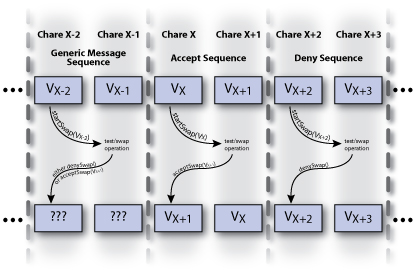

// Assumed variable declarations
|
| Figure 1: C++ Code for Bubble Sort Calculation |
The bubble sort alogrithm is a fairly straight forward way of sorting an array of values. The goal of the calculation is to sort the contents of the array. For the purpose of example, lets say we wish to sort an array of integers values with length N so that the lowest values are at the beginning of the array (lowest index) and the highest values are at the end of the array (highest index).
The overall calculation is broken down into several iterations. During each iteration, the array is scanned. Each element is compared against its neighbor. If the two elements are out of order (that is, if the element at the lower index has a higher value than the element at the higher index), then values in the elements should be swapped. This means that any value in the array will only move by at most one index in the array during each iteration. In the worst case, an element will have to move from one end of the array to the completely other end of the array (i.e. move N - 1 indexes). This requires N - 1 iterations to be performed (if no check is done during each iteration to test if the array is sorted; we will not do this check, for now, to keep the code simple).
The first observation to make about bubble sort is that the order of the test/swap operations (that is, if statement in Figure 1) doesn't really matter. It may make a slight difference on the total number of iterations for a value at a particular location to move a certain distance, but this is a minor point. Because the order of these test/swap operations does not matter, each iteration can be broken up into two phases. In one phase, all of the odd elements (that is, elements at odd indexes) will compare their value with their higher neighbor (that is, the element at index + 1). By doing this, each element in the array is involved in at most one test/swap during this phase. In the next phase, all of the even elements (that is, elements at even indexes) will compare their values with their higher neighbor. If it is easier to visualize, in the first phase the odd elements will compare their values with one neighbor (all in one direction, either higher or lower) and then with the other neighbor in the next phase. Figure 3 below, under the Implement It section, has an example array being sorted to help illustrate this idea.
For the sake of simplicity, we will start by only having a single array element (value) per chare object in the chare array. Additionally, we will use an implicit barrier to control progress via communication with the main chare object. Since the chare objects are only involved in a single test/swap operation per phase, there should be little to no state to keep track of.
|  |
|
Figure 2: Communication performed in a single phase of the bubble sort calculation. |
The communication between chare objects within any given phase should be fairly straight forward. Let us consider a single pair of chare objects, chare object at index X and its neighbor at index X+1. One of the chare objects, let's say X, will initiate the test by sending it's value to the other object, X+1. Once the message arrives is received, chare object X+1 knows both values and can perform the test. If the object decides that the order of the values is fine, it can deny the swap by sending a message back to X indicating this. If, however, the values need to be swapped, X+1 can simply replace its old value with the value X sent to it and send a message back to X containing its old value which X will use to replace X's value (completing the swap operation). See Figure 2.
Once the chare object at index X has received a reply from X+1, X will send a message to the main chare object to indiciate that this pair (X and X+1) has finished the swap for this phase of this iteration. Once all of the pairs have done this, the main chare object will start the next phase of the computation. For now, this will serve as an implicit barrier which will reduce the number of race conditions that are possible and reduce the complexity of the code for the chare array. However, it should be noted, the presence of this implicit barrier will degrade the performance of the calculation as the chare objects in the chare array are continuously having to synchronize with one another (and wait for the slowest object).
Try implementing the bubble sort calculation using Charm++. See the hints for implementing the parallel prefix program (specifically makefile, initial values, and checking correctness).
| initial array: { 0, 1, 6, 3, 7, 2, 9, 3 } | ||
| Iteration and Phase | Before Phase starts | After Phase Completes |
| iteration 1, phase 1 | { (0,1), (6,3), (7,2), (9,3) } | { (0,1), (3,6), (2,7), (3,9) } |
| iteration 1, phase 2 | { 0, (1,3), (6,2), (7,3), 9 } | { 0, (1,3), (2,6), (3,7), 9 } |
| iteration 2, phase 1 | { (0,1), (3,2), (6,3), (7,9) } | { (0,1), (2,3), (3,6), (7,9) } |
| Figure 3: Example array being sorted using the parallel bubble sort algorithm. | ||
A simple solution for this program can be found here (BubbleSort.tar.gz). Please note, this solution does not just run for N iterations. Instead, it exits after there have been two consecutive phases with no swaps occuring (indicating that the array is sorted).
Similar to the extension for the parallel prefix program, try implementing this calculation so that each chare object contains multiple values. Having a single integer value per chare object is inefficient since the amount of computation done in an entry method is quite low and won't be able to efficiently overlap with the overhead of sending messages. With multiple integer values per chare object, the amount of computation done per each message received will rise and likely increase the efficiency of the program.
The presense of the implicit barriers reduces the efficiency of the calculation. The barriers are not actually required though. Try writing an implementation that does not use any barriers. That is, have the main chare start the computation and then only be notified when the array is correctly sorted. Additionally, no single chare object should act as a manager for any of the other chare objects. Instead, they should all be peers, each containing their values and trying to trade values with their neighbors if they find that values are out of order. Once again, it will probably be easier to first implement an barrier-less implementation with each chare object only having a single integer value.
Hint: Each chare object only needs to talk to its neighbors. It should check both neighbors to check if the values (its value and its neighbors values) are in order. If the values are not in order, then the appropriate swaps should take place. If a swap takes place between a chare object and its neighbor, the other neighbor's value should also be rechecked to see if the new value needs to be swapped with the other neighbor. If a chare object checks both neighbors and finds that the values are in order, it is currently finished working (for now). I could be later woken up by a neighbor that received a new value and might have to swap again in the future. When all chare objects decide that they are finished (no chare needs to swap with any of its neighbors) then the overall array is sorted and all the chare objects are no longer sending/receiving any messages or executing any entry methods. Here, something called quiescence detection can be used. Quiescence occurs when all of the following conditions are met: (1) no chare objects are currenly processing a messsage (i.e. executing an entry method), (2) no chare object has a message queued for it by the Charm++ Runtime System, and (3) no messages are in-flight in the interconnect. For more information on quiescence detection, see Section 3.13: Quiescence Detection of the The Charm++ Programming Language Manual. It might be easier to continue on with the tutorial and come back to this version of bubble sort after having become a bit more experienced with Charm++ (specifically after learning more about callbacks).
{kind=link}